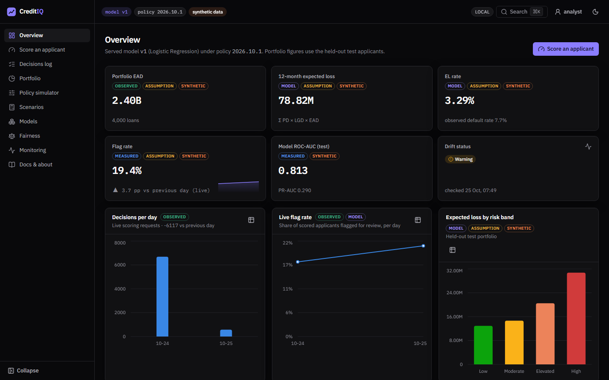
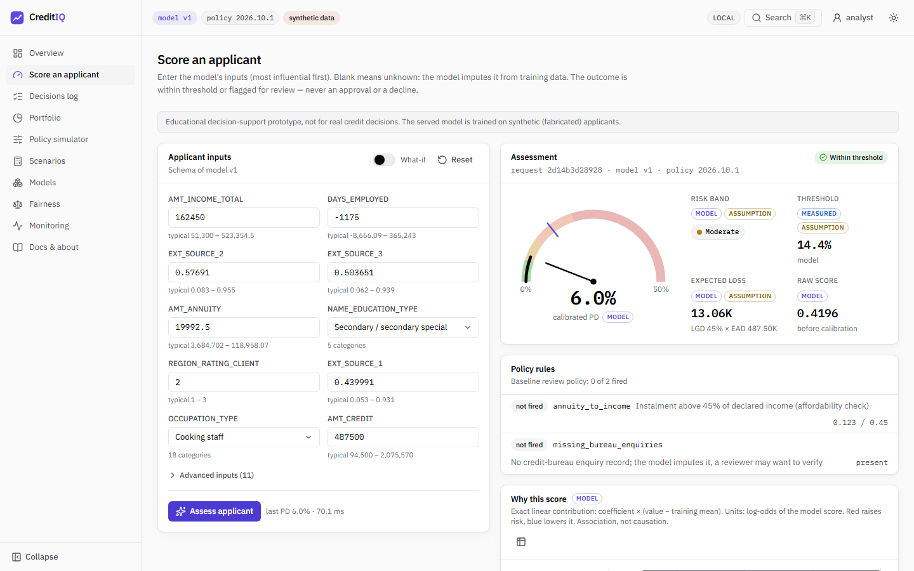
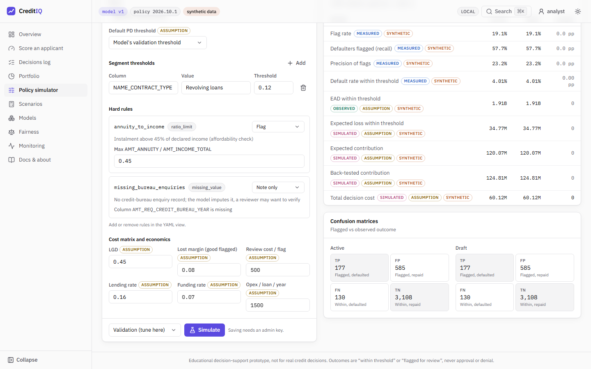
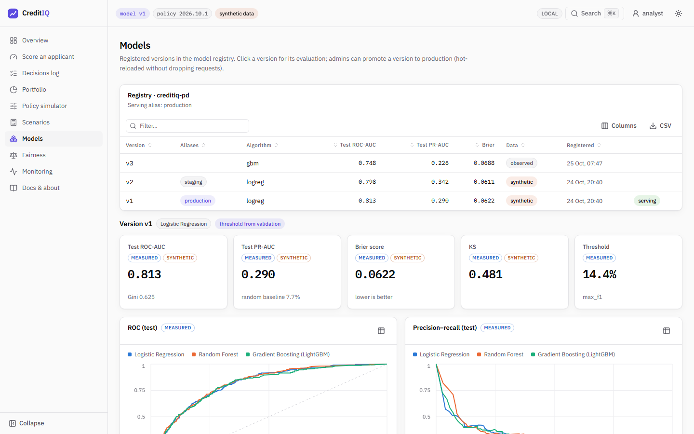
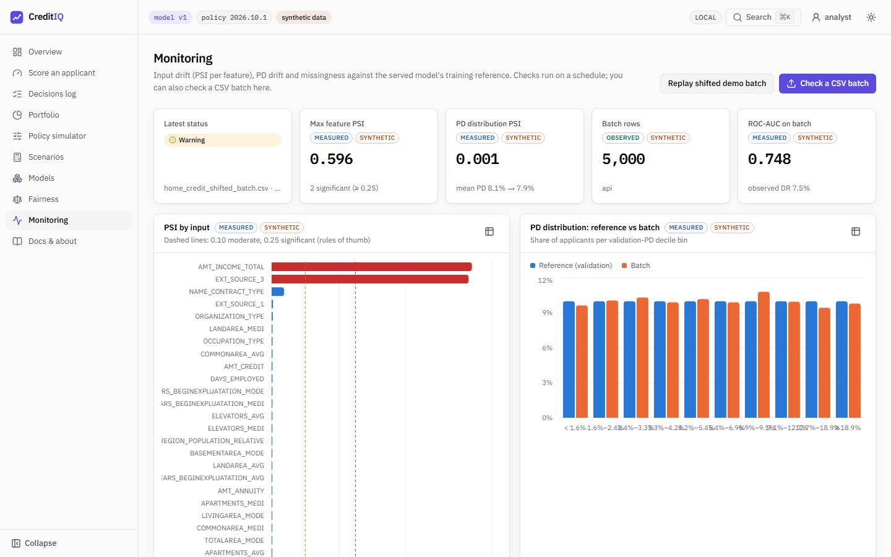

How the app works, what every feature does, and how to run it on your own laptop.

CreditIQ estimates how likely a loan applicant is to run into repayment trouble, checks the result against a lending policy, explains why, and keeps an audit trail. It is a decision-support tool: a person makes the decision.
A machine-learning model reads the application (income, loan amount, external credit scores…) and outputs a probability of default (PD), for example 6.0%.
A separate, versioned lending policy compares the PD with a threshold and runs rules (e.g. instalment above 45% of income). Result: within threshold or flagged for review.
Every answer lists its top reasons, is written to an audit log (without personal data), and a monitor warns when incoming applicants start to look different from the training data.
20,000 fabricated applications shipped in the repo (data/sample_credit_data.csv). Used by default, so the app runs for anyone straight after cloning. Its results say nothing about real borrowers.
The free Kaggle Home Credit Default Risk file. Not in the repo (too large, licence). Download application_train.csv into data/raw/ to train the real model (page 8).
All the maths lives in one Python library, creditiq_core. The trainer, the API and the monitor import it, so a number is computed the same way everywhere.
| Folder | Role |
|---|---|
| packages/creditiq_core | The library: data checks, features, models, calibration, explanations, fairness, drift, lending economics, policy engine. |
| services/trainer | creditiq-train: trains from a YAML config, writes a versioned model package, promotes and rolls back. |
| services/api | creditiq-api: the REST API under /v1 (score, decide, models, policies, portfolio, fairness, monitoring…). |
| services/monitor | creditiq-monitor: scheduled drift checks over the audit log and an inbox of CSV batches. |
| web | The dashboard. It never holds API keys in the browser: a small server-side proxy adds them. |
| policies | Lending policies as versioned YAML files (2026.10.1 baseline, 2026.10.2-strict). |
| legacy | The original v1 Streamlit app, unchanged. v2 reproduces its numbers exactly. |
There are two loops. Training happens rarely and offline; scoring happens on every request, in tens of milliseconds.
Schema and quality checks; the target mapping must be written in the config (which value means “default”).
Train, validation and test, stratified, seed 42. Test is touched once, at the very end.
Ratios such as credit ÷ income and instalment ÷ income; fill gaps, encode categories. Sensitive attributes are removed.
Logistic regression, random forest, LightGBM. The best validation ROC-AUC wins.
Turn raw scores into honest probabilities and choose the review threshold, both on validation only.
Final metrics, model card and quality report go into a new registry version, tagged staging or production.
On Score an applicant. The form is generated from the model’s own input list.
The web server forwards the request to the API with the API key, so the key never reaches the browser.
Bad fields get a clear error. The model returns a calibrated PD and the top reasons.
PD vs threshold, plus hard rules. Outcome: within threshold or flagged for review, with reasons.
Model and policy versions, scores, rules fired, and a keyed hash of the inputs. If the database is down, no answer is given (503).
PD gauge, risk band, expected loss, the reasons chart. The monitor later uses these scores to spot drift.
Where each number on screen comes from.
The model’s estimate that this applicant has the dataset’s “default” event. For Home Credit that event is early payment difficulty, not a 12-month default. A PD of 6% means: out of 100 similar applicants, about 6 would have trouble.
Chosen automatically at training time: the trainer tries every cut-off on the validation set and keeps the one with the best F1 score (balance of catching defaults vs flagging good applicants). Synthetic model: 14.4%. Home Credit model: 12.3%. The policy can override it per segment (revolving loans: 12%).
Bands are set by the policy (band_cutoffs: [0.05, 0.10, 0.20]). Bands describe risk; only the threshold and the rules decide the outcome.
EL = PD × LGD × EAD
LGD (loss given default) is an assumption of 45%; EAD is the loan amount. In the screenshot on page 6: 6.0% × 45% × 487,500 ≈ 13,060.
Each input’s exact contribution, in log-odds. Red bars push the risk up, blue bars push it down. It shows association, not causation.
| Tag | Meaning | Example |
|---|---|---|
| observed | Counted from real records | Decisions per day, portfolio size |
| measured | Measured on held-out data | ROC-AUC 0.813, flag rate |
| model | Output of the model | PD 6.0%, raw score |
| assumption | A number we chose | LGD 45%, interest rate 16% |
| simulated | Result of a what-if or stress test | Policy simulator, scenarios |
| synthetic | Based on fabricated data | Anything from the bundled sample |
Ten pages in the left sidebar. The top bar always shows the model version, the policy version and whether the data is synthetic.
The home page: portfolio size, 12-month expected loss, flag rate, model ROC-AUC, drift status, and charts of daily decisions and loss by risk band.
The main feature. Enter an application and press Assess applicant. You get the PD gauge, risk band, expected loss, threshold, which policy rules fired, and the reasons chart.
Turn on What-if and the result updates live as you change inputs. Blank fields are fine: the model fills them from training data.

The audit trail: every decision with time, model and policy versions, PD, outcome, rules fired and reasons. Filter and open any row.
The held-out test applicants as a loan book: exposure and expected loss by band, predicted vs observed default rate by decile, concentration (HHI) and loss curves.

Change thresholds, rules and costs in a form or as YAML, then simulate: flag rate, expected loss, profit and the confusion matrix, side by side with the active policy.
An admin can save the draft as a new policy version and activate it. No retraining is needed.

Every registered version with its metrics, ROC and precision-recall curves, calibration chart, model card and a threshold explorer (validation data only).
An admin can promote a version to production or roll back to the previous one. The API switches within 30 seconds.
Is today’s data still like the training data? Shows drift per input (PSI), PD drift, missing values, and the alert history.
Replay shifted demo batch runs a drift check on a prepared batch that matches the live model, and should raise a warning. Check a CSV batch lets you upload your own file.
PSI below 0.10 is fine, 0.10–0.25 is a warning, above 0.25 is significant.

Lending economics: break-even PD and interest rate, a PD × rate profit heatmap, stress tests (higher PDs or losses) and loan NPV.
Compares flag rates and errors across gender, age and family-status groups, plus a scan for inputs that act as stand-ins for them.
Method, limitations, the disclaimer and links to the API docs, MLflow and Grafana when they are running.
Can score, browse, simulate and run drift checks. Cannot change what is live.
Can also promote or roll back models and save or activate policies. Every admin action is logged.
No cloud account and no Docker needed. You need three free tools, then one command.
git-scm.com, to clone the repository.
The Python tool. It installs Python 3.12 and every package for you.
astral.sh/uv
For the dashboard. After installing Node, run corepack enable.
# 1. get the code and install the Python side git clone https://github.com/Bikram-Dev-Web/credit-iq.git cd credit-iq uv sync # 2. start everything (first run trains the model and builds the web app: ~5 minutes) powershell -ExecutionPolicy Bypass -File scripts\run-local.ps1
Two minimized PowerShell windows open: one for the API and one for the dashboard. Close them to stop the app.
uv sync uv run creditiq-train train --config services/trainer/configs/synthetic.yaml \ --no-mlflow --file-registry models/registry --alias production # terminal 1: the API API_KEYS="analyst:dev-analyst-key-change-me,admin:dev-admin-key-change-me" uv run creditiq-api # terminal 2: the dashboard cd web && pnpm install && cp .env.example .env.local && pnpm dev # optional: fill the decisions log with demo traffic uv run python scripts/seed_demo.py --key dev-admin-key-change-me
| Link | What |
|---|---|
| localhost:3100 | Dashboard (option A) |
| localhost:8010/docs | Interactive API docs |
| localhost:3000 / 8000 | Same, with option B |
API key for the docs page: dev-analyst-key-change-me (development only).
application_train.csv from Kaggle (free account) into data/raw/.uv run creditiq-train train --config services/trainer/configs/home_credit.yaml --no-mlflow --file-registry models/registry --alias productionStart the app at least five minutes before you present, and open each page once so it is warm.
“One model, one policy, every number tagged with where it comes from.” Point at the version chips in the top bar.
Press Assess applicant. Explain the PD, the band, the threshold and the reasons. Turn on What-if and lower EXT_SOURCE_2 to watch the PD rise until it is flagged.
Lower the threshold, press Simulate: more applicants flagged, fewer missed defaults, more review work. That is the trade-off a lender makes.
Show the model card and calibration. As admin, promote another version and say: “the API switches without downtime.”
Press Replay shifted demo batch; a warning appears with the inputs that changed.
Every decision we just made is here, with versions and reasons, and without the applicant’s data.
A model is a tool for a reviewer, not a judge. “Flagged for review” keeps a person accountable.
It is in the usual range for this dataset when only the main application table is used. Adding the bureau and previous-loan tables is the usual way to go higher.
Sensitive attributes are excluded and fairness is measured per group; small groups give noisy numbers, and we say so.
Synthetic model: p95 46 ms at 20 requests/s. The real model: p95 73 ms, still above our 50 ms target.
| Problem | Fix |
|---|---|
| Dashboard says the API is unreachable | The API is still loading (up to 3 min for the real model). Check localhost:8010/healthz. |
| “Port already in use” | Another app uses the port. Option A uses 8010/3100 for that reason; close the other app or change PORT. |
| Script blocked by Windows | Keep -ExecutionPolicy Bypass in the command. |
| Dashboard looks outdated after a pull | Delete web/.next and run the script again to rebuild. |
The model’s estimate that an applicant will have the default event.
Share of the loan lost if a default happens. Assumed 45%.
How much is owed when the default happens; here, the loan amount.
How well the model ranks risky above safe applicants: 0.5 is a coin flip, 1.0 is perfect.
Adjusting scores so a 10% PD really means about 10 in 100 have trouble.
A balance of catching defaults (recall) and not flagging good applicants (precision). Used to pick the threshold.
How much an input’s distribution has moved since training. Above 0.10 is a warning.
A label such as production pointing at one model version. Moving it is a promotion.
| README.md | Overview, results, quick start |
| docs/MODEL_CARD.md | What the model is for, its data, metrics and limits |
| docs/RUNBOOK.md | Operating it: promote, roll back, handle alerts |
| docs/adr/ | 15 short records of why each technical choice was made |